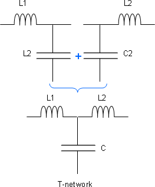
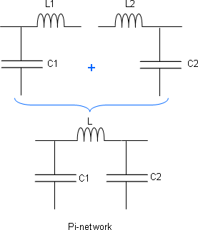
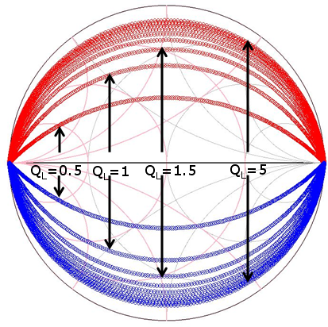
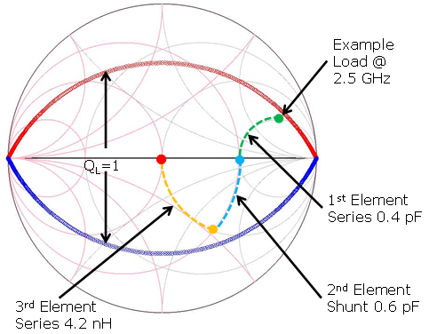
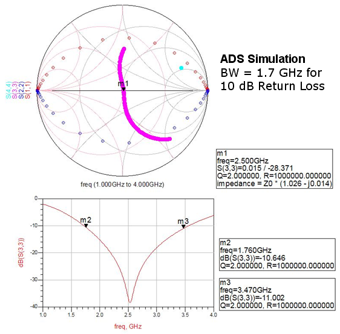
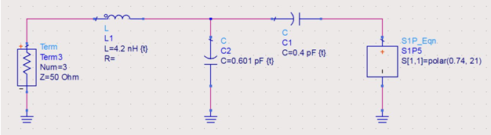
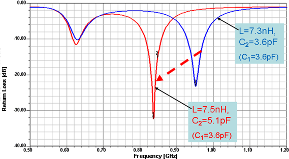

Advanced matching networks
- Three-element network designs have one additional degree of freedom.
- Pi or T matching networks remove forbidden regions.
- Derived from a combination of two separate 2-element networks.
 |
 |
- Once the transformation ratio is set, the bandwidth, or the quality factor (Q) of the
network, is fixed.

- Use additional LC elements to control the frequency or to increase the bandwidth.



- Typical three-element return loss performance and the fine tuning of a Pi-network is shown below:

Note Three-element Pi and T networks permit the matching of almost any load
condition. The added element gives more flexibility in the design process for fine tuning, and
provides for advanced design through the control of quality factor (Q).
Note Three- and four-element networks are also used to improve yield through
increased bandwidth by being less sensitive for any production variation of the DUT pins and also
for any variation in LC tuning elements used on the board for tuning (Example: The fringing
capacitance is varied by the amount of soldering material applied in production of the board,
i.e. from site-to-site or board-to-board).
Functional changes
- Introduced in SmarTest 7.1.4